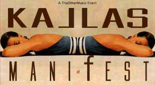

| April 2004 |
PUTA - PREMIERE

Lørdag den 17. april
The Other Music (det hedengang Barden Barden) holder endnu en multitude af en fest i Store Vega med intet mindre end 19 bands og dj's - indtil videre.
Puta fra dunst får nu sin første for alvor live-live-live-optræden: Hun er inviteret til at deltage med bandet Puta til The Other Musics fest. Og skal synge et par elektro-rave-francais-moi-avec-tu-toi-numre på den store scene.
Ja, 15 minutter i helvede!
Print denne side